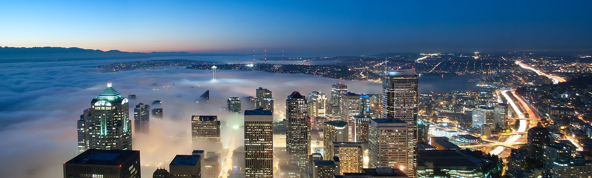

Checkpoint: Seattle
You've made it to Seattle, Washington. Since becoming incorporated and later recognized a state, Seattle has had a history of boom-and-bust cylces. The first boom it experienced was a result of the luber industry. However, the Great Seattle Fire of 1889 destroyed the city's business district, though very soon after, Washington Mutual was founded, which would help rebuild the city's economy. The next boom, however, and indeed the most dramatic, came from the Gold Rush. This made Seattle a hub for transportation in a very short time. While not many of the working men found any type of lasting wealth, Seattle's clothing and feeding of the miners panned out, as it had become the main transport and supply point for these miners. Around this time, a shipbuilding boom was also taking place, which especially took off during the first World War. However, then came the Great Depression, and Seattle was hit especially hard. And among the citizens of the city, minorities had it worst, as they fell subject to failed unemployment claims due to their citizenship status, loss of property, and rampant racism. However, Seattle found local economic prosperity again during the second World War, this time centered around Boeing Aircraft. The city has seen one more boom after the Great Recession, as Amazon opted to move its headquarters to Seattle (information courtesy of Wikipedia.com). Today, Seattle is one of the most developed cities in the Pacific Northwest, the image above is a view of the city from the Colombia Center, the city's highest building (image courtesy of Patrick Rodriguez / CC BY-SA ).
{kind=link}

Despite the economic highs and lows, the ports of the city, the businesses, and the beauty of it, Seattle
is probably best known for its influence in pop culture.
The city is home to multiple sports teams, for instance. Most notably, it is home to the Seattle Seahawks, Mariners, and Sounders FC, which are the city's professional football, baseball,
and soccer teams, respectively. The Seahawks have advanced to the Super Bowl 3 times, in 2005, in 2013, and once again in 2014. One of these games even resulted in a win for Seattle, being
the 2013 Super Bowl, where they were able to beat the Denver Broncos 43-8. In addition to that, the city also has several prominent Women's sports teams, including the Seattle Storm, their WNBA team, who won the championship on 3 occassions, being in 2004,
2010, and 2018, as well as the Seattle Reign, members of the National Women's Soccer League (information courtesy of Wikipedia.com).
Perhaps of even more note, however, is the city's contributions to the world of music. It has been the birthplace or home of severl famous musicians, including Nikki Sixx of the band Mötley Crüe,
Duff McKagan, of the bands Guns n' Roses and Velvet Rovolver (the singer from this band is from another town featured on this site, see if you can find him!), as well as the legendary Jimi Hendrix (pictured on the left, image cortesy of A. Vente / CC BY-SA 3.0 NL
). All of these musicians were prolific, but Hendrix in particular made astounding contributions to the world of music. To this day, he is considered to be one of, if not the, best guitar player who has ever lived.
The fact that Hendrix was born in Seattle does surprise some, as his group, The Jimi Hendrix Experience, was from the UK, but Jimi himself is American, and in fact served in the 101st Airborne (information courtesy of Wikipedia.com
). So while the UK has the claim to the band which gave people the man who many consider to be the best to ever pick up a guitar, the United States, more specifically, the city of Seattle, has the claim to being his hometown.
Seattle was not only a home to musicians, but has also been the starting point of many proflicic bands. Some of the more well known ones include Alice in Chains, Foo Fighters, Heart, Mother Love Bone, Mudhoney, Nirvana,
Pearl Jam, Soundgarden, Sunn O))) and many many more. Seattle is in fact credited with being the orignal home of grunge, due to its connection to many of the original, and most influential, grunge bands
ever created, namely Nirvana, Alice in Chains, Pearl Jam, and Soundgarden (information courtesy of Wikipedia.com). All
of the aforementioned bands, as well as ones which haven't been mentioned, had a great deal of influence on their respective genres, making Seattle home to some of the most influential bands to ever exist.
{kind=link}
To further explore Seattle, click here
Pedaling for Parkinsons claims no affiliation with Google Street View